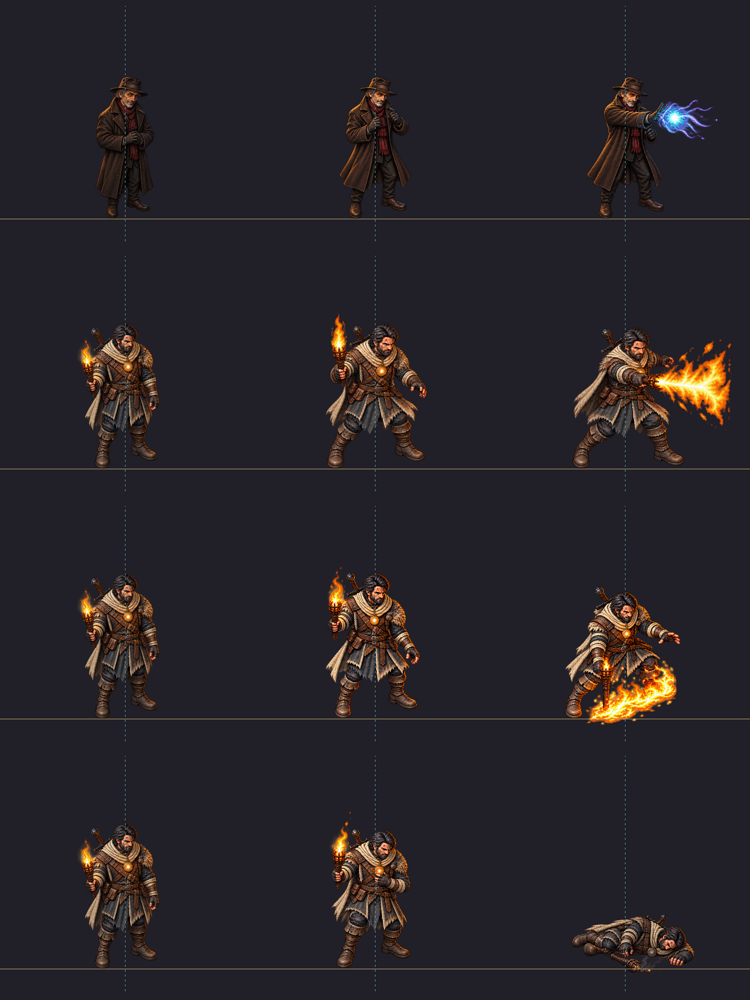

PLAN-053 / DEV-024/hero-wide-actions-v01 aprovado por plano. Quatro tiras e vinte células 512×512 DRAFT. Quatro wide v01 visualmente aceitas pelo dono, mantidas DRAFT. Fontes, extrações e oito candidatas já aceitas foram preservadas. Nenhum asset runtime admitido.
Compare identidade/figurino, porte e escala corporal com os idles, continuidade da pose, efeito inteiro e contato com o chão. Corpo a 85 px na opção padrão; o canvas não define a altura aparente. Crouch/queda não são ampliados artificialmente quadro a quadro. Massa/aparência são critérios humanos; a auditoria técnica não os aprova.
Aceite das quatro · Inventário aceito · Referências/marcações · Auditoria · Registro Godot · Prancha completa
Prancha: linhas AO08/ER08/ER09/ER10; colunas idle aceito / primeira pose / pico ou final. Linha dourada y=448 e eixo ciano do corpo.

Escala constante em toda a tira; efeito inteiro cabe no canvas.
Referência corporal: 290 px; escala única 0.4173; PNG 2048×512; margem mínima 63 px.
Escala constante em toda a tira; efeito inteiro cabe no canvas.
Referência corporal: 300 px; escala única 0.5396; PNG 2048×512; margem mínima 37 px.
A ativa conserva o agachamento; apoio dos pés e fogo abaixo deles têm coordenadas separadas.
Referência corporal: 300 px; escala única 0.6522; PNG 3072×512; margem mínima 39 px.
Referência inicial de morte: 285 px, por já estar inclinada. A queda comprime a silhueta naturalmente, sem zoom por quadro.
Referência corporal: 285 px; escala única 0.6182; PNG 3072×512; margem mínima 49 px.
Prévia de revisão, sem playtest. Compatibilidade do canvas ampliado com o renderer do jogo não foi testada nem implementada. Integração, CANON, commit, push e exportação têm gates próprios.